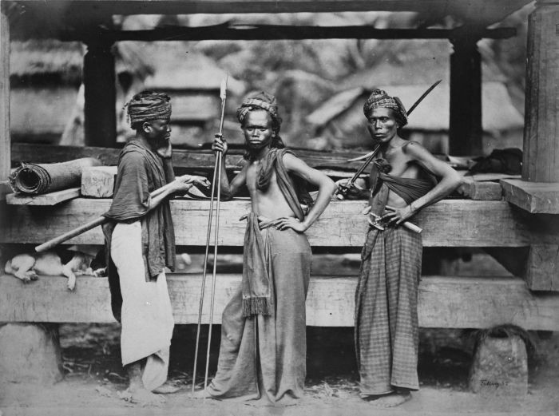
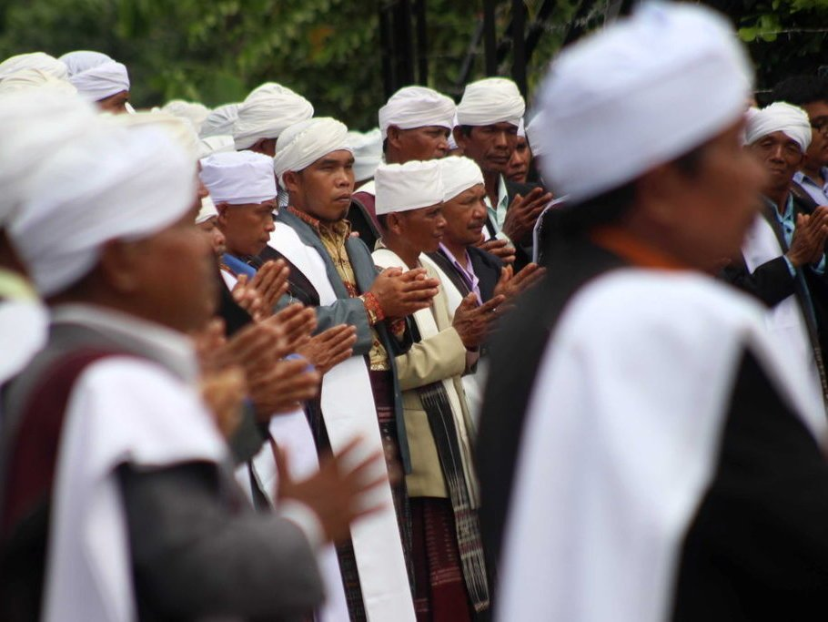
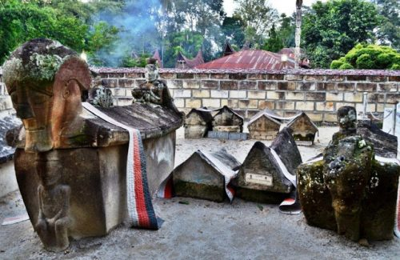
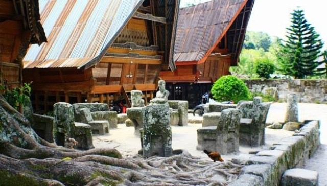
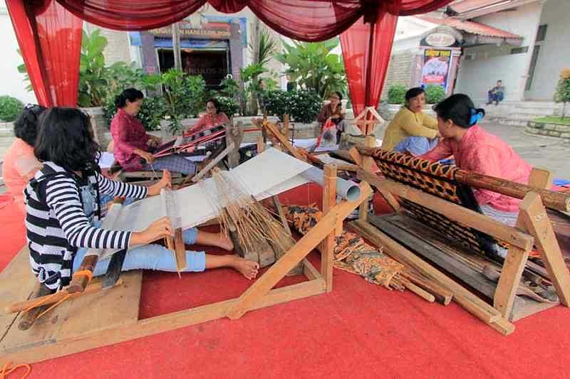

Sejarah Batak

Suku Batak merupakah salah satu suku bangas terbesar di Indonesia,Berdasarkan sensus dari Badan Pusat Statistik di tahun 2010.
Nama ini merupakan tema kolektif untuk mengidentifikasikan beberapa suku bangsa yang bermukim dan berasal dari Pantai Barat dan Pantai Timur di Provinsi Sumatera Utara. SUku bangsa yang dikategorikan sebagai Batak adalah Angkola,Karo,Mandailing,Pakpak/Dairi,Simalungun, dan Toba Batak adalah rumpun suku-suku yang mendiami sebagian besar wilayah Sumatera Utara. Namun sering sekali orang menganggap penyebutan Batak hanya pada suku Toba, padahal Batak tidak hanya suku Toba.
Agama Batak Lokal

Malim adalah agama asli dari Tanah Batak, yang mempercaiayai kisah raja lhat dan Boru serta keturunan-keturunannya adalah bagian dari ajaran dan keyakinan yang dianut Malim.
Para pengikut agama ini disebut parugamo Malim atau biasa disingkat Parmalim Raja lhat dan Boru kemudian membangun perkampungan pertama di kaki gunung Pusuk Buhit. ia diberi nama Sianjurmula-mula. Perkawinan keduanya menghasilkan tiga anak: Raja Miokmiok,Patundal nibegu, dan Aji Lapaslapas.
Peninggalan sejarah Batak
Pulau Samosir menjadi wilayah yang banyak dipilih untuk menikmati keindahan Danau Toba. Tak hanya danau terbesar di Asia Tenggara yang bisa dececap pesonanya, Pulau ini juga memilik peninggalan sejarah Suku Batak Toba
Makam Raja Sidabutar

Merupakan makam penguasa Samosir di masa silam yang terbuat dari batu utuh berukuran besar. Batu tersebut diletakkan begitu saja di atas tanah. Memasuki makam raja yang terkenal kesaktiannya ini, wisatawan harus menggenakan ulos. Raja meinggal pada 1544. Objek wisata ini berada tak jauh dari dermaga di Tomok. Wisatawan tinggal berjalan kaki untuk mencapai objek wisata ini.
Huta Sialagan

Berupa sebuah kompleks yang terdiri atas beberapa rumah Batak Toba, makam raja, serta seperangkat meja dan batu yang menjadi tempat mengadili para pelaku kriminal di masa silam. Yang terakhir inilah yang disebut batu persidangan dan menjadi ciri khas dari objek wisata di sini. Di kursi batu itulah raja bersama penasihat membahas hukuman untuk seseorang yang berbuat kejahatan. Hukumannya bisa berupa hukuman pancung. Siallagan sendiri tak lain dari nama sebuah marga. Huta atau kampung siallagan ini berada di Desa Ambarita, Kecamatan Simanindo. Kampung juga dikelilingi oleh batu besar, yang juga berfungsi sebagai benteng
Desa Penenun Ulos,Lumban Suhi-suhi

Mengenal kain ulos tak hanya di museum saja, wisatawan bisa juga melihat langsung aksi penenun di Desa Lumban Suhi-suhi. Para penenun umumnya kaum perempuan, dari remaja hingga kaum sepuh. Wsiatawan bisa belajar corak pada kain ulos dan maknanya. Aktivitas dilakukan di depan rumahnya yang umumnya masih berbentuk tradisional. Biasanya para perempuan di Pulau Samosir ini menenun di pagi hari